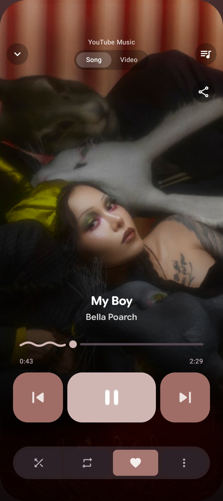
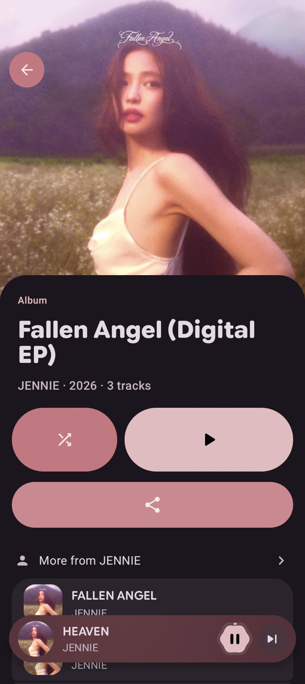
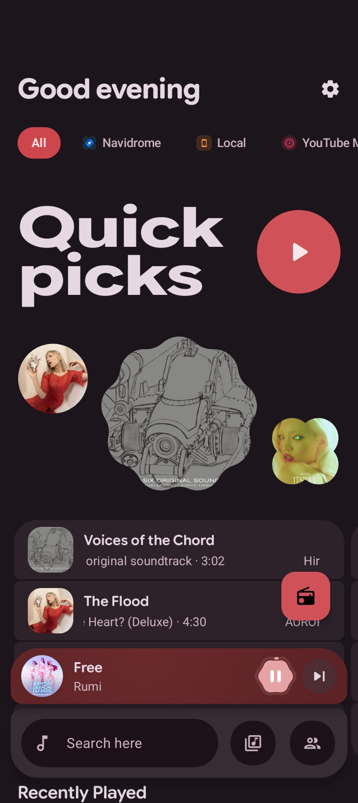
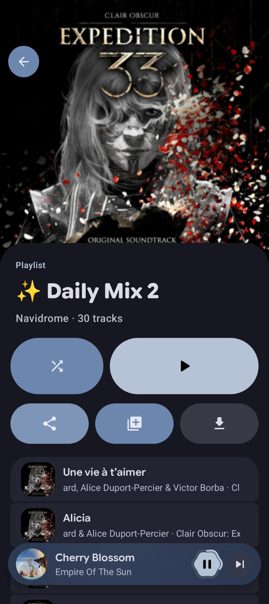
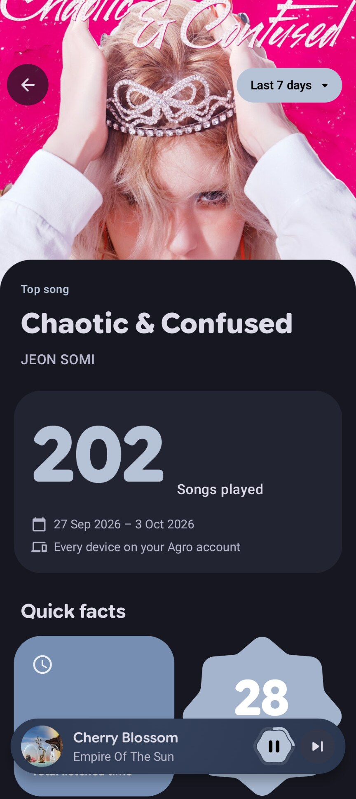
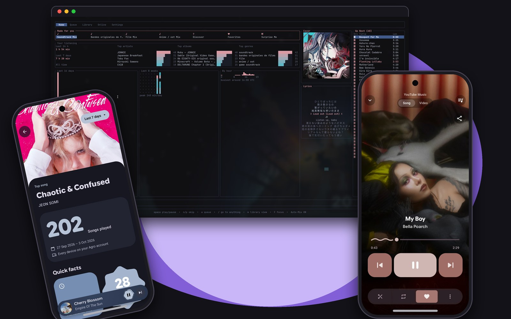
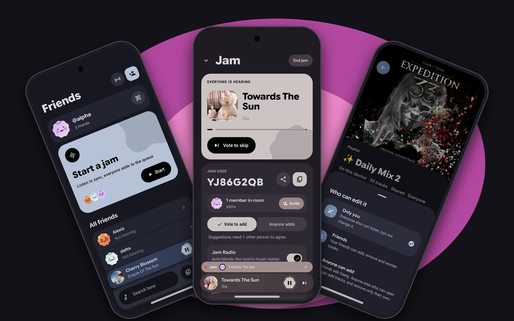
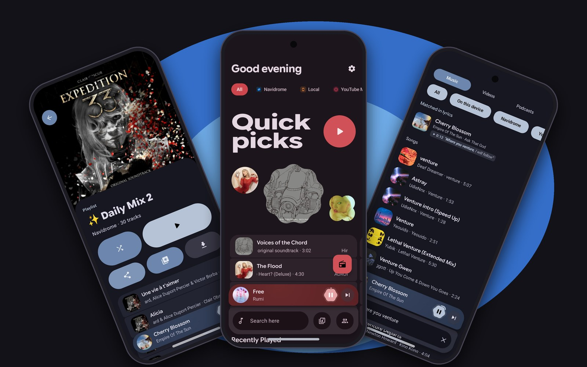
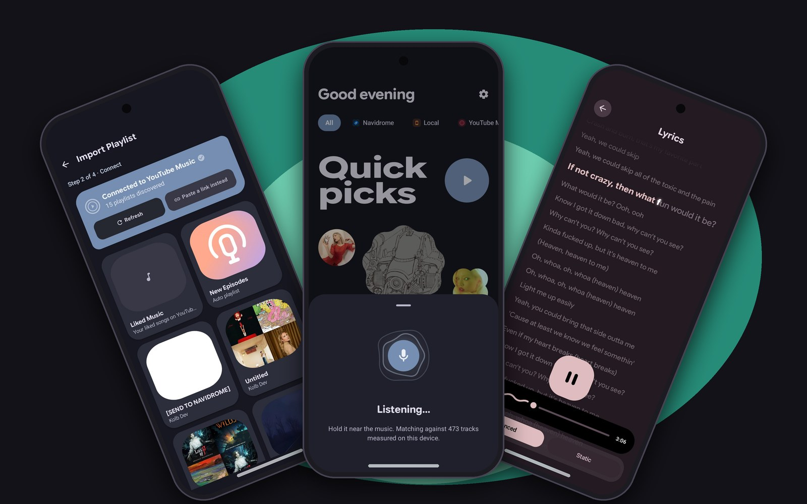

A simple, open-source music ecosystem
Agro is the server behind Wanda on Android and Wander on the desktop. Both apps play your music on their own; connect them to Agro and they share handoff, jam rooms, friends and stats. Open source under AGPL-3.0.


One server, two apps
Wanda and Wander are the players. Agro is the optional server that connects them to each other and to your friends.
A small Rust server with a web dashboard. It carries handoff, jam rooms, friends, shared playlists, share links and stats from every device. Host it yourself or sign in to Agro Cloud.
AgroUPlus/Agro →The music player for your phone. Navidrome/Subsonic, local files, YouTube Music and Deezer in one library, with lyrics, song recognition and playlist import. Works without Agro.
AgroUPlus/Wanda →A terminal music player for Linux. Navidrome/Subsonic and local files in one queue, with cover art, lyrics and visualisers. Works without Agro.
AgroUPlus/Wander →


A player that knows your taste
Wanda brings listening stats, a yearly recap and daily mixes, and moves freely between local files, Navidrome/Subsonic libraries and streaming sources.
Stats are worked out on the phone and never leave it. Connect Agro and you can choose to see them across every device on your account. No telemetry, ever.
Built for every side of your listening
Each card says which part does the work.
What Agro adds Needs an Agro server: your own, or Agro Cloud

Pick Up Where You Left Off
Move what's playing from Wander on your computer to Wanda on your phone, with the queue and position intact. Listening stats add up across every device on your account.
- check_circleQueue & position handoff, both ways
- check_circleStats & settings synced across devices

Jam Rooms, Friends & Shared Playlists
Start a jam, share the code, and everyone hears the same track. Let friends add to a playlist with you. They see what you're playing only if you turn it on, encrypted for each friend.
- check_circleShared queue, voting and Jam Radio
- check_circlePlaylists only you, friends, or anyone can edit
- check_circleEvery social switch off by default
What Wanda does on its own No server needed

Four Sources, One Library
Navidrome/Subsonic, files on your phone, YouTube Music and Deezer show up as one library with one search and one queue. The same song from two sources appears once.
- check_circlePlays the best-quality copy available
- check_circleDaily mixes & radio made on the phone

Recognition, Lyrics & Import
Hear something you like? Wanda matches it against your own library, right on the phone. Synced lyrics follow along, and playlists from Spotify, Deezer or YouTube Music come in with a link.
- check_circleSong recognition without the cloud
- check_circleLRCLIB lyrics only if you allow it
Private by default. Safe by design.
Metadata and credentials are sealed client-side before touching the wire. The server stores ciphertext and holds zero keys.
Passphrases hashed using Argon2id. Scoped device tokens are 256-bit CSPRNG, stored strictly as SHA-256 hashes.
Presence and listen-along streams are individually encrypted per recipient public key, preventing any server leakage.
Two ways in
Run the binary yourself, or sign in to the hosted instance. Either way the clients, keys and libraries behave identically.
One lightweight binary with embedded SQLite. Run it in Docker or install it natively, no build needed.
# Docker docker run -d --name agro -p 8700:8700 \ -v agro_data:/opt/agro/data \ -v ~/Music:/srv/music:ro \ ghcr.io/agrouplus/agro # Or native on Linux (no root) curl -fsSL https://raw.githubusercontent.com/AgroUPlus/Agro/main/scripts/install.sh | sh
Then open localhost:8700 and paste the one-time setup token from the log (docker logs agro) to create your admin account.
High uptime, effortless to use, and the smartest Agro server in the network.